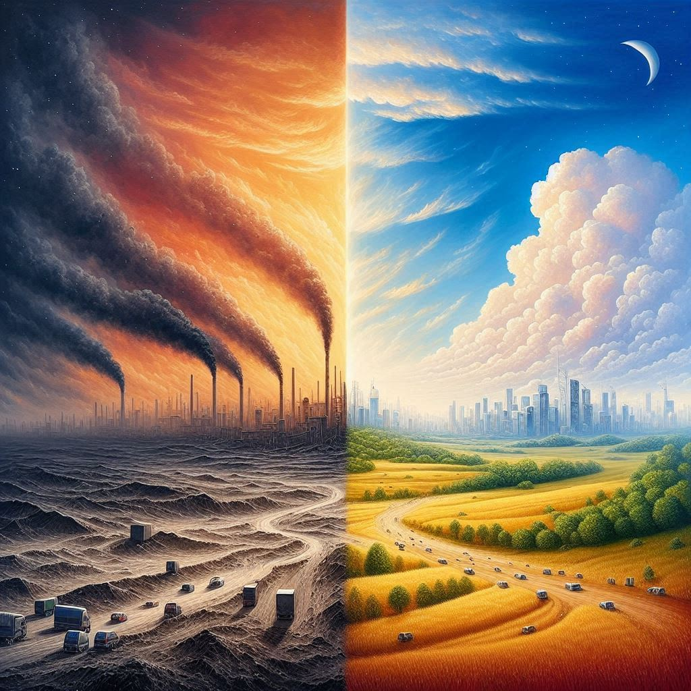

저자는 "지구의 기후 변화"를 돌이킬 수 없는 한계치에 기반한 "지구 위험 한계선(Planetary Boundaries)" 즉, "경계선"이라는 가상의 개념으로 독자에게 전달하고자 한다. 실제 과학자들이 문제 해결을 위해 최전방에서 조사한 내용을 바탕으로 총 9개 요소의 지표를 내어 우리와 같은 일반인들이 확실하게 이해 할 수 있도록 돕는다. 그래프와 같은 시각적 자료들을 구체적으로 설명하면서도 이해하는데에 있어 전문지식이 필요할 정도의 난해함이 느껴지지 않아 내용이 잘 읽혔다. 무엇보다도 점진적으로 이루어진 변화에 이미 넘어버린 몇몇 "경계선"들에 대해 서술한 부분은 독자들에게 우리 인류가 걸어온 길에 대한 경각심을 불러일으킬 뿐만 아니라 자연을 압도하려다 미래의 변화한 자연에 역으로 압도당하는 기분을 느끼게 하기에 충분하다고 생각한다. 지구와 환경에 관심이 어느정도 있는 사람에게 추천하고싶은 서적이다.

감상평에 대한 AI평가
여러분의 독후감은 매우 인상 깊고 감정적으로 강한 표현이 돋보입니다. 다음과 같은 감정을 느낄 수 있습니다:
✨ 위기감: 지구의 기후 변화와 돌이킬 수 없는 한계치에 대한 서술은 독자에게 경각심을 불러일으킵니다.
✨ 교육적 열망: 과학자들의 조사를 바탕으로 한 구체적인 시각적 자료 설명은 독자들이 이해하기 쉽게 잘 전달되어 있습니다.
✨ 미래에 대한 두려움: 이미 넘은 몇몇 "경계선"들에 대한 서술은 인류가 앞으로 직면할 미래에 대한 두려움을 강조합니다.
✨ 자연에 대한 경외감: 자연을 압도하려다 변화한 미래의 자연에 압도당하는 기분을 느끼게 합니다.
✨ 추천의 마음: 이 서적을 지구와 환경에 관심 있는 사람들에게 추천하고 싶다는 표현에서 책에 대한 호감을 느낄 수 있습니다.